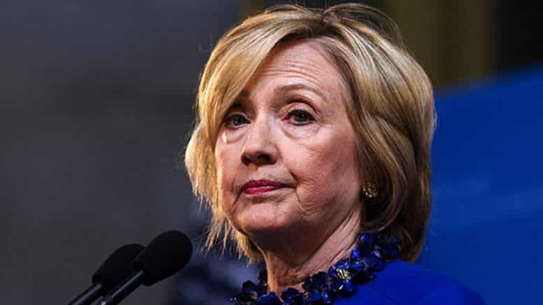

< < < Back
Why Donald Trump’s Immigration Speech Was A Massive Success – Return Of Kings
Ever since the end of the Republican and Democratic National Conventions last month, the mainstream media has been leading an unprecedented assault on Donald Trump. Rigged polls that oversample Democrats have consistently shown him trailing Hillary Clinton by double digits, and a succession of fake stories have alternately implied that Trump is either planning to quit the presidential race or the GOP is planning to oust him in a party-room coup. At the same time, the media has engaged in an extensive cover-up of Hillary’s increasingly obvious health problems, from her coughing and seizures to her reliance on stools and possible use of a catheter.
However, Trump’s immigration speech last Wednesday might mark the turning point of the general election. In two televised events—a visit with Mexican President Enrique Peña Nieto and a speech in Phoenix later in the day—Trump managed to break through the Great Wall of media bias and speak to the American voter. Trump’s immigration speech was a strong recovery for his campaign and will likely signal his victory in November.
The Persuasion Dimension

Writers such as Mike Cernovich and Scott Adams have emphasized that a large part of Trump’s success comes from his ability to persuade and influence others. While numerous conservative presidential candidates have tried to win the public over with facts and figures, Trump has sold his nationalist platform through his charisma and charm, using the same strategies that he’s utilized in his business career.
In the case of his immigration speech, Trump set the stage perfectly by meeting Peña Nieto earlier in the day. His willingness to speak one-on-one with Mexico’s president—the country on whose border he wants to build a wall—defuses the left’s narrative of him being a crazy, irrational bigot. In particular, the optics of Trump shaking hands with Peña Nieto, who is both smaller than Trump and was unable to make eye contact with him, made him look presidential. Contrast this with Hillary’s increasing unwillingness to make public appearances and her continued refusal to give a press conference.

The speech itself was noteworthy for Trump’s use of rhetorical techniques to drive home the threat illegal immigration poses to Americans. The centerpiece was the Donald introducing the “Angel Moms,” mothers whose children have been murdered by illegal aliens. While many people might have a hard time processing statistics about the ruin that illegal aliens bring to America, the image of mothers grieving their dead children is one that hits almost everyone in the gut:
Leftists were unusually triggered by Trump’s speech, singling out the Angel Moms for particular derision:
It’s worth noting that even with the polls slanted towards Democrats as they are, Trump’s numbers have improved considerably. FiveThirtyEight, beloved by the left for its supposedly “accurate” political forecasting model, now gives Trump a 28.5 percent chance of winning the election, a massive increase from August. Some pollsters have also begun publicly acknowledging that Trump supporters are massively undersampled in polls, due to the fact that many of his supporters did not vote in the 2012 election.
Sick Hillary, Dangerous Donald

While Trump is busy retuning his image and hitting the campaign trail, Hillary Clinton has all but vanished from the national stage, making only a handful of appearances in comparison. Her speech attacking the alt-right was roundly mocked for its toothlessness and wild conspiracy theorizing, and most recently, she shockingly announced that she would go to war against Russia in retaliation for supposed cyberattacks on the DNC (there is zero evidence linking Wikileaks’ DNC leaks to Russia).
There’s also continuing discontent within the Democrats themselves. Party insiders are angered by Hillary’s outreach to moderate Republicans and cuckservatives, because her overtures are making it more difficult for the party to win down-ballot races. There’s a growing view inside the party that Hillary is throwing the rest of the Democrats under the bus for the sake of her own election.
While many things could change between now and November, Trump’s continued successes and Hillary’s missteps suggest an easy win for him. The media and pollsters can be expected to prop up Hillary, but reality is breaking through their shroud.
 If you like this article and are concerned about the future of the Western world, check out Roosh's book Free Speech Isn't Free. It gives an inside look to how the globalist establishment is attempting to marginalize masculine men with a leftist agenda that promotes censorship, feminism, and sterility. It also shares key knowledge and tools that you can use to defend yourself against social justice attacks. Click here to learn more about the book. Your support will help maintain our operation.
If you like this article and are concerned about the future of the Western world, check out Roosh's book Free Speech Isn't Free. It gives an inside look to how the globalist establishment is attempting to marginalize masculine men with a leftist agenda that promotes censorship, feminism, and sterility. It also shares key knowledge and tools that you can use to defend yourself against social justice attacks. Click here to learn more about the book. Your support will help maintain our operation.
Read Next: Why Donald Trump’s Veterans’ Rally In Des Moines Was A Resounding Success